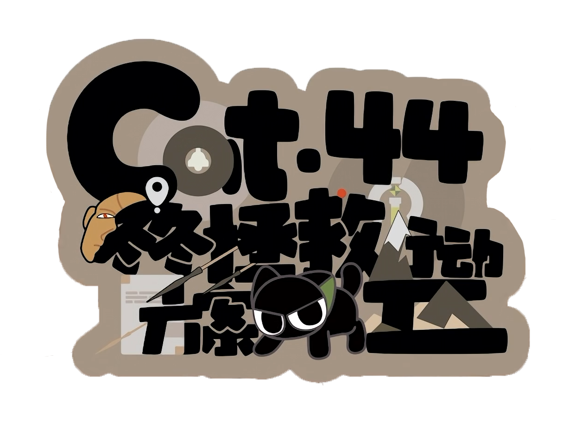
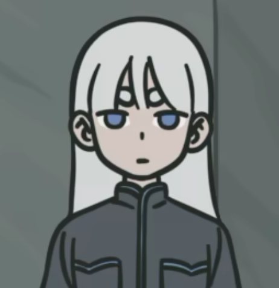

冬冬拯救行动方案五RESCUE / STATION 07
岩层暂时安静了。
这一刻的扫描场。
现实时间已冻结。地图按当前引擎状态绘制，等待不会改变它。
滚轮缩放 · 拖动平移 · 双击复位双指缩放 · 拖动平移 · 双击复位
等波。开洞。封住来路。
找到下一处落点
WASD 在洞内走动，空格真实起跳。开始后移动鼠标即可转头；自动锁定失败时照常移动，点击画面重试锁定，按住右键可拖出画面继续转头。V 重试锁定，滚轮调开洞斜距（准星旁的标签实时显示距离）。红球只推荐位置，不会替你开洞。
看到亮蓝，再按左键
首 1 km 安全教学没有探测，随时左键开洞，无需填充物。进入探测范围后，建议等亮蓝再开；提前开洞不会被按钮拦截，但真实扫描波碰到空洞就会暴露。黑门从一点展开，约 0.3 秒后打开。
按 F，走近并跳进黑门
1 / 2 切换红袋 / 蓝袋，F 丢填充物，落地 1 秒后封洞；岩层从外到内是纹白岩 → 金刚岩 → 纹白岩（16–10 / 10–6 / 6–0 km），纹白岩用红袋、金刚岩用蓝袋，换层后要换袋。入口稍微悬空，走近后按空格、向前跳入；远处原地跳不会传送。出口在新洞上方；穿过后的旧洞口约 0.3 秒后收拢消失。门开低时，1.5 秒内按鼠标中键原地补洞。
左手摇杆，右手转向
左下滑动虚拟摇杆移动，右侧画面拖动转头。摇杆推多少走多快，松手立即停下；两根手指可同时操作。横屏视野更宽，推荐横屏游玩。
看到亮蓝，再点开洞
底部“＋ / −”调开洞距离（0–58 m），准星对准推荐点。安全窗口打开时“开洞”亮蓝，再点右下大按钮。提前开洞不会被按钮拦截，但真实扫描波碰到空洞就会暴露。
填充、跳跃、补洞
门开后点“填充”丢下当前袋，点“跳跃”跳入黑门；底部切换红袋 / 蓝袋。门开低时“补洞”会闪烁，1.5 秒内点它。按住“快进”加速等待；右上暂停会冻结所有计时。
触屏设置位于“老君的法宝（加强版） → 操作方式”，可强制切换自动 / 键鼠 / 触屏。左摇杆与右视角可同时使用；松手、暂停或切到后台都会清空输入。触屏下仍保留 Esc 暂停与 H 帮助。
三个阶段对应三次事件：单钟持续到 6 km；对方察觉后停机，静默段快速推进；到 1.5 km 五钟逐台重启，波前会先在岩层里走一段路，再进入扫描。Shift 只加速等待，临近信号自动恢复原速。静默段不需要填充物。Esc 暂停、释放鼠标并冻结所有计时，继续后重新进入视角控制；生命耗尽后须开始新行动，继续存档不会恢复生命。独立教学为完整 1 km、推荐 20 跳，不受缩距辅助影响。
实际扫描波与空洞球体相交才会命中；HUD 仅给出建议，五个源头高度参与距离计算。320 跳为推荐路线，偏离后推荐点会重新校验可达性。
三维画面未能启动
请用 Edge 或 Chrome 打开，启用浏览器硬件加速，并保留同目录的 vendor 文件夹。